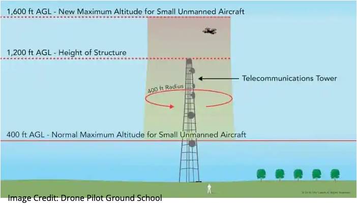
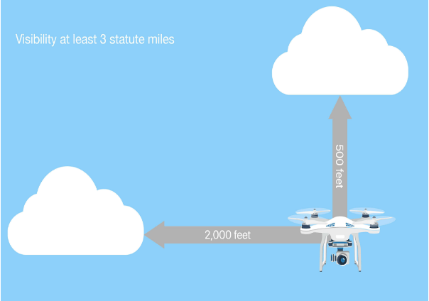

Drone Program
Drone ProgramFAA Part 107 · Know Before You Fly
Major Operating Limits
The FAA sets the legal threshold for small remotely piloted aircraft. But should we always fly right up to it?
Tufts University Data LabDrone Program Briefing
Operational Limits for Drones in the NAS
Maximum ground speed
The regulated ceiling is 87 knots (100 mph). In practice, the fleet we fly never gets close to it.
Compact quad
Max speed 35 mph
Standard quad
Max speed 42 mph
Mapping quad
Max speed 45 mph
Flight time: roughly 31 minutes under ideal conditions — wind, cold, and payload all shorten it.
Operational Limits for Drones in the NAS
Maximum altitude
A drone cannot fly higher than 400 feet above ground level (AGL) — unless it stays within a 400-foot radius of a structure and no more than 400 feet above that structure's uppermost point.

Image credit: Drone Pilot Ground School
The structure exception
Mapping a cell tower or crane taller than 400 ft? You may fly up to 400 ft above its highest point — but only inside a 400-ft radius around it. Stray outside that radius and the standard 400-ft AGL ceiling applies again.
Operational Limits for Drones in the National Airspace
Visibility and cloud clearance

Minimum visibility
3 sm
As observed from the location of the control station.
Cloud clearance
500 ft below · 2,000 ft horizontal
Measured below and away from any cloud.
Operational Limits for Drones in the NAS
Daylight, twilight, and night operations
Standard operations require daylight or civil twilight with anti-collision lighting. Since April 21, 2021, Part 107 and recreational pilots can also fly at night — if two conditions are met:
1
Complete online recurrent training on night operations.
2
Equip the drone with anti-collision lighting visible from at least 3 statute miles.
Drone ProgramThe real question
Legal isn't the same as responsible.
These are some of the limits the FAA regulates. Where should the Drone Program set its own, tighter limits — and why?
References & Links
Sources
TUFTS DRONE PROGRAM · TUFTS UNIVERSITY DATA LAB
← Home